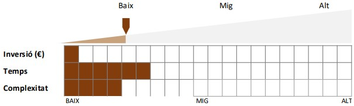

La missatgeria instantània
Les aplicacions de missatgeria instantània com Whatsapp o Telegram permeten intercanviar informació a temps real de diferents tipus d'arxius, ja siguin textos, imatges, vídeos, missatges de veu o fins i tot fer videoconferències.
Sabies que són eines apropiades per fidelitzar la clientela?

Quin esforç t'implica?
Principals característiques
- La inversió és baixa. Les aplicacions de missatgeria instantània tenen un cost econòmic molt baix; WhatsApp i Telegram són gratuïtes.
- El temps de dedicació és mitjà-baix. La missatgeria instantània no presenta massa dificultats tècniques, la qual cosa facilita molt el seu ús.
- La dificultat tècnica és baixa. La major part d'opcions que ofereix no presenten massa dificultat. Un cop plantejada una estratègia, el seu desenvolupament és senzill.